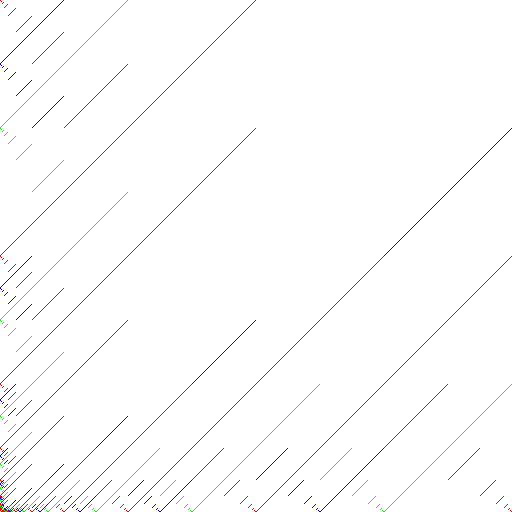
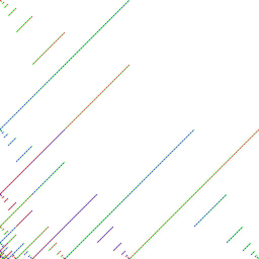
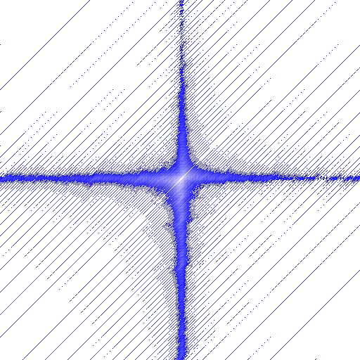
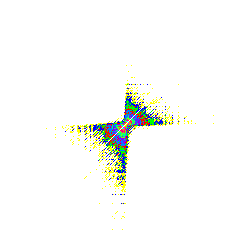
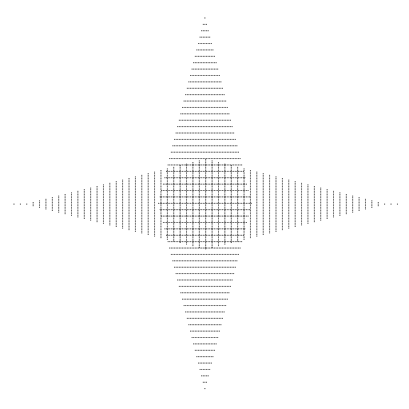
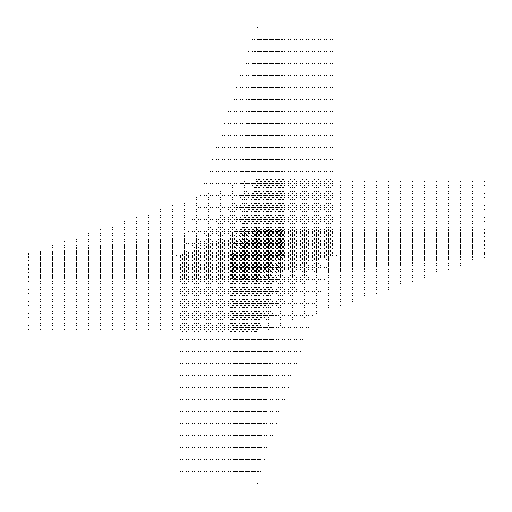

This page shows a couple of pictures created using the function DrawOrbitPicture.
This function is new in RCWA 2.3.0. In order to save space, the pictures have been
converted to PNG format by a common graphics program.
The first picture shows an orbit under an action of the modular group PSL(2,Z)
on Z x Z (the pattern of course extends to infinity):
The action of PSL(2,Z) on that orbit is regular(!). The picture is created by the following commands:
gap> PSL2Z := Image(IsomorphismRcwaGroup(FreeProduct(CyclicGroup(2), > CyclicGroup(3))));; gap> DrawOrbitPicture(PSL2Z,[0,1],20,512,512,false,fail, > "~/rcwa/pictures/example1.bmp");
The second picture shows three orbits under that action of PSL(2,Z) on Z x Z, in different colors:
This picture is created by the following command:
gap> DrawOrbitPicture(PSL2Z,Combinations([1..4],2),20,512,512,true, > [[255,0,0],[0,255,0],[0,0,255]], > "~/rcwa/pictures/example2.bmp");
The third picture shows the distance of points from (0,1), in terms of length of words in the generators, under the above action of PSL(2,Z). The color is determined by the distance (mod 3):
This picture is created by the following command:
gap> DrawOrbitPicture(PSL2Z,[0,1],20,256,256,true, > [[255,0,0],[0,255,0],[0,0,255]], > "~/rcwa/pictures/example3.bmp");
Afterwards, the picture has been enlarged by a factor of 2 by a standard graphics program, in order to improve the visibility of the colors of the pixels.
The following picture shows the same, but with a free product of two cyclic groups of order 3 instead of PSL(2,Z):
This picture is created by the following commands:
gap> G := Image(IsomorphismRcwaGroup(FreeProduct(CyclicGroup(3), > CyclicGroup(3))));; gap> DrawOrbitPicture(G,[0,1],13,256,256,true, > [[255,0,0],[0,255,0],[0,0,255]], > "~/rcwa/pictures/example4.bmp");
The next picture shows the distance of points from (0,1), in terms of length of words in the generators, under the action of a group which acts 2-transitively on Z:
This picture is created by the following commands:
gap> G := Group(ClassShift(0,1),ClassTransposition(1,2,0,4));; gap> DrawOrbitPicture(G,[0,1],20,512,512,true, > List([1..20],i->[255-12*i,255-12*i,255]), > "~/rcwa/pictures/example5.bmp");
The same, for another group which acts 2-transitively on Z:
This picture is created by the following commands:
gap> G := Group(mKnot(3),ClassShift(Integers));; gap> palette := [[255, 0, 0],[ 0,255, 0],[ 0, 0,255], > [255,255, 0],[255, 0,255],[ 0,255,255], > [255,128, 0],[255, 0,128],[128,255, 0], > [ 0,255,128],[128, 0,255],[ 0,128,255]];; gap> DrawOrbitPicture(G,[0,1],16,512,512,true,palette, > "~/rcwa/pictures/example6.bmp");
The next picture shows a ball around (0,1) of another group (the orbit covers the plane with the pattern visible in the middle of the image):
This picture is created by the following commands:
gap> G := Group(ClassTransposition(0,2,1,2), > ClassShift(0,4))^ClassTransposition(0,2,1,4);; gap> DrawOrbitPicture(G,[0,1],30,512,512,false,fail, > "~/rcwa/pictures/example7.bmp");
Another similar picture. The orbit again covers the plane with the pattern visible in the middle of the image:
This picture is created by the following commands:
gap> G := Group(ClassShift(0,2), > ClassTransposition(0,4,1,4))^ClassTransposition(1,2,0,6);; gap> DrawOrbitPicture(G,[0,1],40,512,512,false,fail, > "~/rcwa/pictures/example8.bmp");
| Back to RCWA main page, main page | Last modified: 05-Jun-2007 |